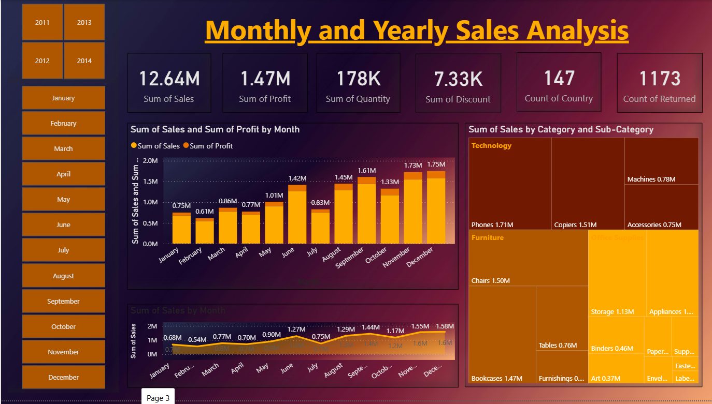
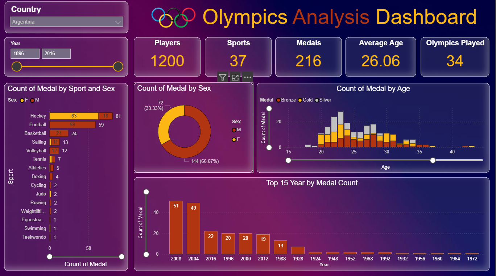

Hello, I'm
Transforming raw data into intelligent solutions — from interactive dashboards and predictive models to AI-powered applications built with large language models.
I'm a passionate technologist who sits at the intersection of data analytics and artificial intelligence. I love turning complex datasets into clear, actionable insights through interactive dashboards, and building intelligent systems powered by machine learning and large language models.
Whether it's crafting a Power BI dashboard that tells a compelling data story, training a machine learning model to predict outcomes, or architecting an LLM-powered agent that understands natural language — I'm driven by the challenge of making data work smarter.
AI-powered applications leveraging large language models, agents, and conversational AI systems.
Local-first AI agent that translates natural language to MySQL queries using a 7B LLM via Ollama. Features a tiered safety framework with query classification, destructive query blocking, audit logging, and a Streamlit interface.
Local LLM based conversational chatbot for museum ticket booking. Built with a stateful LangGraph agent, database connection pooling, fuzzy-matching search, and deployed as a Flask API with Streamlit frontend.
Predictive models and ML pipelines solving real-world classification, regression, and NLP problems.
End-to-end ML pipeline predicting customer churn with 92% accuracy using ensemble methods. Features EDA, feature engineering, hyperparameter tuning, and model interpretability with SHAP.
Built a movie recommendation system using TFIDF vectorization on movie data to represent content features. Implemented cosine similarity to measure closeness between movies and generate top-N recommendations for users. Built a end-to-end ML project with efficient data preprocessing, feature engineering, and recommendation retrieval. Used Flask for the backend to integrate with the frontend site.
An advanced document intelligence platform that combines TensorFlow deep learning computer vision models with Local LLM-based RAG to parse, classify, enhance, summarize, and query complex PDF documents.
Interactive dashboards and analytical deep-dives using Power BI, Excel, and SQL.

End-to-end Power BI dashboard analyzing regional sales trends, product performance, and revenue KPIs with interactive drill-down capabilities and dynamic filtering.

An interactive Dashboard analyzing historical Olympic Games data spanning 1896–2016(120 years). The dashboard provides country-level insights into athlete participation, medal tallies, sport-wise performance, gender distribution, and age demographics, all dynamically filterable by country and year range.
Automated financial reporting pipeline built in Excel with dynamic pivot tables, variance analysis, and forecasting models for quarterly business reviews.
I'm always open to discussing new projects, collaboration opportunities, or just chatting about AI and data. Feel free to reach out!